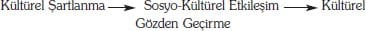

Konum, alışkanlık, yaşam stili, arasındaki ilişki değiştirilebilir olmaktadır, böylece de belli bir daireyi tamamlamış olmaktadır. Sınıf farklılıkları, insanların zihinlerinde, beğeni farklılıkları, ayırt etme ve farkında olma kapasitesi, şeklinde düşünülmektedir. Beğeni, insanların dahil edilip edilmediğini; yabancıları; rakipleri; evlileri; bunlardan birinin evde ya da okulda nasıl sergilendiğini belirlemektedir. Toplumsal farklılıklar, kültürel farklılıkları belirlemektedir ve bulunulan yer anlamında, sahip olunan olanakları ve sınırlılıkları ifade etmektedir. Bu nedenle, nesnel zorlamalar, ilkeler ile güçlendirilmektedirler.
İdeoloji Kuramının Neo-Weberci Eleştirisi
Birçok Weberciye göre, Weber'i ve Marks'ı uzlaştırmaya çalışan yukarıdaki girişimlerden hiç biri başarılı olmuştur. Bunların hepsi de kültürün, toplumsal yapıya indirgenmesini kabul etmektedirler: Habermas'ta toplumsal akılcılaşma, devletin ve ekonominin egemenliğinin bir sonucudur; Elias'ta uygarlaşma, devletin merkezileşmesinin sonucudur; ve Bourdieu'da habitus (üretken ilke, çn.), yeniden oluşturulan sınıfın asalağıdır. Burada, Weberci kültür nosyonunu yapısalcı görüşten ayırmaya çalışan iki eleştiriyi ele alacağız.
Abercrombie, Hill, ve Turner: Burjuva İdeolojisi
Yukarıdaki fikirler, kültürün, insanın aklına hükmeden ve ona egemen olan bütünleşmiş ya da birleşmiş fikirler bütününden ibaret olduğunu ileri sürmektedirler. Dolayısıyla, kültür, yeniden oluşturulan toplumsal yapının sonucudur. Kültür, insanlara neyin doğru neyin yanlış olduğunu ve toplumsal alan içinde yerlerinin ne olacağını göstermektedir, ve böylece kuşaktan kuşağa toplumun şekillenmesini sağlamaktadır. Abercrombie, Hill ve Turner (1980, Abercrombie ve Turner, 1980), bu hakim ideoloji tezleri ile ortak değerler sisteminin yapısal-işlevselci kuramları arasında birçok açık paralelliklerin olduğunu iddia etmektedirler (bkz bölüm 5). Sonuncusunda, kültür, empoze edilmiş bir güç anlamında değildir, daha ziyade toplumun her tarafında paylaşılan normatif akıldan oluşan bir uzlaşıyı dile getirmektedir. Bununla birlikte, bu tarz bir çözümlemede, kültür, ayrılıkları ve sapmayı ortadan kaldırma yada kontrol etme işlevlerini yerine getirerek sistemin devamını sağlamaktadır.
Abercombie, Hill ve Turner'a göre, iki düşünce, eşit bir şekilde eleştiriye hedef olabilir, fakat, ilgilerini özellikle Marksist fikirler üzerine yoğunlaştırmaktadırlar. Marks'da ve Engels'de ki temel kusur, iki ideoloji kavramına sahip olmalarıdır. Bu bölümün temel fikirler kısmında işaret edildiği gibi, bir yandan Marks ve Engels, toplumdaki idari fikirlerin, yönetici sınıfın fikirleri olduğunu iddia ederken, diğer yandan da Marks, toplumsal varlığın, bilinci belirlediğini kuramlaştırmaktadır. Abercrombie, Hill, ve Turner bu iki görüşün çelişkili olduğunu ileri sürmektedirler: İşçi sınıfı, aynı zamanda, yönetici sınıfın fikirleri ve belirli bir işçi sınıfı bilinci tarafından bastırılamayabilir.[46] Gerçekten, bu yazarlar sadece kapitalist toplumların değil, bir çok toplum biçimlerinin de farklılaşmış, bütünleşmemiş, ya da baskın olmayan kültürler ile nitelendirildiğini iddia etmektedirler.
Abercrombie, Hill ve Turner (İngiliz) kültürün, 3 aşamadan geçtiğini kabul etmektedirler.
• Feodal Kültür: Burada onlar, feodal toplumun, Hıristiyan inancının evrensel bağlanmalarıyla birleştirildiği geleneksel görüşe karşı çıkmaktadırlar. Gerçekten, Hıristiyanlık, sadece asil yönetici sınıfın içinde etkiliydi. Bu inanç, monogamiyi ve aile ödevlerini destekleyerek asillerin farklı çıkarlarını birleştirdi ve mülkiyet mirası için bir meşruluk sağladı. Köyler, kültürel açıdan ayrıldılar ve de kendi izole edilmiş sınırlarında içsel olarak bölündüler. Bu küçük topluluklarda, organize olmuş şiddet araçları ve topraklar üzerindeki asillik (soyluluk) tekeli, köylüleri kontrol eder ve onların dine bel bağlamalarına gerek yoktur.
• Liberal Kapitalist Kültür: Erken burjuva kültürü, geleneksel soylu hakimiyetine karşı bir karşıtlıktan meydana gelmiştir. Burjuva kültürü, Protestan Ahlakı içinde en iyi ifade edilen, materyalizmi, servetin birikmesini ve bireysel çıkarı (yararı), vurgulamaktadır. Gerçekten burjuvazi baskın olduğundan dolayı, bu etik, aile, yerli ahlak, ekonomik öz güven üzerine odaklanan hatırı sayılır bir kültür içinde meydana gelmiştir. İdeoloji, dönemin niteliğini taşıyan aileyi, küçük ölçekli kapitalist firmayı korumaya ve meşrulaştırmaya hizmet etmiştir. Fakat, işçi sınıfı, bu ideolojik programlar (yönelimler) içinde pek birleşmiş değillerdi. Bazı işçi sınıfı bölümleri, burjuva kültürünün bazı öğelerini benimsemiştir. Bazıları, bir köylü gelenekçiliği doğrultusunda hareket ederken, diğerleri de hâlâ yönetici sınıfa karşı reformist ve devrimci bir muhalefet ile meşgul olmuşlardır.
• Örgütlenmiş Kapitalist Kültür: 20. yüzyıldaki hakim ideoloji figürü diğerlerinden daha önemli görünmektedir. Hakim ideoloji varolduğu yerde, birikim, yönetimsellik, devletin tarafsızlığı ve refah üzerinde bir etki şeklini almaktadır. Fakat, bu etki tamamen farklıdır ve tutarsızdır ve kişisel bir öğe değildir. Bu kısmen doğrudur. Çünkü geç kapitalizmin hakim kurumları, kişilerin sınıfı değildir. Fakat devlet ve özel sektör içinde yüzsüzlüğünü önlemeyi meşrulaştıran organizasyonlar grubudur. İşçi sınıfı ideolojisi, hem liberal demokrasinin refahının karlarını benimseyerek hem de yenilik hizmetlerine muhalif olarak çift taraflı bir tutumu benimsemesinde oldukça tutarsız görünmektedir.
Abercrombie, Hill ve Turner şu sonuca varmaktadırlar:
Hakim ideoloji, önceki üretim biçimlerde göreli olarak tutarlı iken, geç kapitalizmde bu belirliliğini kaybediyor. Feodal ve erken kapitalist dönemde, hakim sınıf, ikincil sınıf değildir, fakat hakim ideoloji tarafından birleştirilmektedir. Geç kapitalizmde, hakim ideoloji, göreli olarak değersizleşir, çünkü ekonomik talebi yoktur (1980:185).
Bunun için, toplumsal yapının yeniden üretimiyle ilişkili, ideolojinin işlevlerinin genel kuramının olamayacağını iddia etmektedirler. Daha ziyade, ideoloji, kendi konumlarını korumaya çalışan belirli sınıfların hizmetinde kullanılmaktadır. Bir bütün olarak kültür ideolojik bir mozaiktir.
Archer: iki kültür
Archer, Marksist ve yapısal işlevselci görüşlerin eleştirisini yaparken daha soyut bir yönde hareket etmiştir. Archer, çözümlemelerine Kültürel Sistem (KS) ve Sosyo-Kültürel etkileşimi (S-K) tanımlayarak başlamaktadır. KS belirli bir zamanda toplumun ortalama (1988) aydını dile getirir. KS, doğruyu ya da yanlışı iddia eden ve bu nedenle olası çelişkilere açık olan düşünce ve inanç sistemlerinden ibarettir. S-K ise zevklerimiz, tercihlerimiz, sevdiklerimiz ve sevmediklerimiz, vatanseverliğimiz, önyargılarımız gibi diğer bütün ortalama niteliğinde olmayan şeylerden ibarettir (1988:xvii).
O halde, Archer bu seviyeler (düzlemler) arasında kuramsal birleşmenin iki yolunu tanımlamaktadır. Azalan birleştirmede KS, doğrudan S-K üzerinde planlanmaktadır ve toplumsallaşma ve düzenleme araçları tarafından belirlenmektedir. Bu beşinci bölümde betimlenen işlevselci çözümlemede ileri sürülen argümandır. Buna karşın, önceki bölümde tartışılan bir çok neo-Marksist düşünce, SS-K'nin KS'yi baskı ve manipulasyon araçları ile yuttuğu artan bütünleşme biçimleridir. Archer, bu birleştirmelerin hiçbirinin kabul edilebilir olduğunu iddia etmez, çünkü bunlardan her biri, çözümlemenin seviyelerinden sadece birisini gerçek olarak kabul ederken diğerini epifenomen. (gölge olay) olarak ele almaktadırlar. Archer'a göre, her bir seviye, aktif ve gerçektir ve eğer biri, kültürün dinamik süreçlerini çözümlemek içinse her iki seviyenin hareket ettirici kapasitesinin uygunluğu zorunludur. Archer, iki seviyenin karşılıklı bir etkileşimde olduğu merkezi bir birleşme yönündeki talepleri çözümlemektedir, fakat bu iki seviye arasında kurulan bağlılık derecesi, kültürel düzensizlik olasılığını ve bunu oluşturabilen dinamikleri dışarıda bırakacak şekilde somutlaştırılmıştır.
Archer, birleştirmeyi bütünüyle dışarıda bırakmak, ve onun yerine KS ve S-K'nın birbirlerini karşılıklı olarak etkileyen kültürün analitik yönlerini, analitik bir düalizmle ele almak istemektedir. Archer, kültürel dinamiklere yönelik olarak dört öneri dizisi oluşturarak KS seviyesinde ki bu tavuk ve yumurta döngüsüne açıklık kazandırmaktadır (1988.275).
• KS'nin öğeleri arasında mantıksal ilişkiler vardır (Archer burada bileşimde bulunan öğelerin birbirlerine nedensel olarak bağlı olmadıklarını fakat birbirleriyle çelişen veya birbirlerini tamamlayan bir ilişkiye sahip olduklarını kastetmektedir).
• KS tarafından S-K seviyesi üzerinde (güç) kullandığı nedensel etkiler vardır (Karşıtlıklar, aktörlerin çözmesi gereken problemler sunmaktadırlar ve bu şekilde birbirlerini zorlamaktadırlar, tamamlayıcılar özgürlüğü sağlarlar).
• S-K seviyesinde, gruplar ve bireyler arasında nedensel ilişkiler vardır. (Farklı çıkarlarını gerçekleştirmeye çalışan farklı kapasitelere sahip olan bireyler olacaktır. Bu gibi gruplar birbirlerini baskı altına almaya çalışacaklardır. Bunu gerçekleştirmek için bu gruplar, kendi konumlarını destekleyen KS'nin yönlerini harekete geçirerek kültürel gücü ideoloji olarak kullanacaklardır. Bu gruplar, kendi çıkarlarını meşrulaştıracak şekilde KS'yi yeniden şekillendirmeye çalışacaklardır).
• Günümüz mantıksal ilişkilerini biçimlendiren ve yenilerini ortaya çıkaran S-K seviyesinden dolayı, KS karmaşıktır (grupların rekabet eden düşünce sistemleri sundukları yerde aktörler, seçimleri ile sunulacaklardır, bağımsız ve tamamlayıcı düşünce sistemleri sunduklarında, CS'yi gözden geçirmek serbesttir).
Bu, Archer'a, kültürel gelişmedeki genel eğilimi gösterme olanağı vermektedir.
Bu, eğilim şu şekilde ifade edilir:

Kültürler daha çok farklılaşmakta ve çeşitlenmektedir. Çünkü, kültürel koşullar tercihler sunmaktadırlar ve tercihleri etkilemektedirler ve çünkü bu gibi tercihler yapmaya çalışan bireyler ve gruplar, kültürel olanakları sömüreceklerdir.
Post modernizim Kültür Zaferi
Kültüre ilişkin son zamanlarda yapılan tartışmalar, 20. yüzyılın sonunda, kültürün yeni bir aşamadan geçtiği, yeni bir dönüşüm yaşayıp yaşamadığı sorunu üzerine odaklanmaktadır.
Yukarıda, çalışmaları ele alınmış olan Neo-Marksist ve Neo-Weberci düşünürler tarafından çözümlenmiş olan kültürel önergeler, esasen modern niteliktedirler. Bu yazarlar, modern toplumun, kendisini hem maddeci hem rasyonalist ya da her ikisini de içeren eksen ilkeler tarafından tanımlamış olarak gösterdiği için kültürün değişmez bir ideoloji olup olmadığı sorununu başarılı bir şekilde açığa çıkarmışlardır. Eğer toplum, bir fikirler dizisi tarafından baskı altına alınmış görünüyor ise o halde Gramsci ya da Frankfurt Okulu, bu fikirlerin nasıl oluşturulduğunu inceleyebilirler; eğer toplum küçük ve durağan (sabit) sayıdaki sınıflar içinde materyalizm tarafından bölünüyor ise o halde Bourdieu veya Abercrombi, Hill ve Turner kültürün benzer içsel farklılıklar sergileyip sergilemediğini inceleyebilirler.
Bu görüşün artık çok kabul görmediği, kültür kuramcıları arasında yaygın bir kanıdır. İlki, herhangi bir beğeniyi, fikri ya da yaşam tarzını meşrulaştırma, bu gibi farklı alternatif tercihlere geniş bir alan sunma yönünde kültürün karmaşıklaşmasıdır. Değer tercihleri, artık tek bir dizi standarda bağlı olmak zorunda değildir. İkincisi, bu karmaşıklaşma, artık, sınıf-kültür kategorilerinin başarılı bir şekilde yeniden üretilebilmesi yönünde devam etmemektedir, çünkü onlar, artık, sınıfı belirleyicisi olarak tanımlanmamaktadırlar. Elit ve popüler kültür arasındaki sınırların, kitleleşmiş bir kültür içinde yıkıldığı görülmektedir. Böylece, artık, bize neyin doğru, gerçek ve güzel olduğunu ve de büyük proje içinde yerimizin neresi olduğunu söyleyebilecek bir sanayi ya da kapitalist bir kültürün himayesinde yaşamıyor olabiliriz. Biz, artık, karmaşık, kitleleşmiş, bireysel tercihlerden örülmüş post modern bir kültürde yaşamaktayız.
Daha açık bir şekilde söyleyecek olursak, bu gelişmeyi üzerine alabilen iki temel kuramsal görüş vardır. İlkinde, post-modernizm, önceki gelişmelerin bir devamı (uzantısı), geç kapitalizmin ideolojik alt yapısı ya da farklılaşmış bir kültürel alan içinde meydana gelen bir gelişme olarak ele alınmıştır. İkincisinde ise post-modernizm, moderniteden göreli radikal bir kopuş gerçekleştirerek meydana gelen bir toplum biçimidir. Bu önermede çeşitlilikler vardır fakat, her iki görüş de, kültürün ve toplumun, birbirine karıştığı ve birbirine nüfuzettiği bir çağda yer aldığımızı ve kültürün, ideolojik işlevlere sahip olarak anlaşılmasının imkansız olacağını vurgulamaktadırlar.
Bu bölümde, Marksistlerden Jameson'ın ve post-modernistlerden Lyotard ve Baudrillard'ın ve onlara yakın görüşler sunan düşünürlerin görüşlerini inceleyeceğiz.
İdeoloji Olarak Post-modern Kültür
Jameson, Ne görüyorsan onu elde edersin. İlk konumun katı Marksist versiyonu Jameson'dan gelir (1984). Jameson, kültürel değişimin gerçekleştiğini ileri sürmektedir ve onu geç kapitalizmin kültürel mantığı olarak yorumlamaktadır. Jameson, orijinali Mennel'e ait olan kapitalizmin üç aşamalı sürecinden bahseder:
• Ulus–devletlerde pazarların bütünleşmesine neden olan Pazar Kapitalizmi.
• Kapitalist devletlerin, hem hammadde elde etmek hem de uluslararası pazarları ele geçirebilmek amacıyla, sömürgeler oluşturdukları tekelci kapitalizm ya da sömürgeci kapitalizm;
• Kapitalizmin genişleyip yayılması için bütünleşmiş yeni bir global alan oluşturan ve bireylerin açgözlülüğünü arttırarak pazarları genişleten çokuluslu ya da tüketim kapitalizmi.
Kapitalizmin global arenada ki bu patlaması, belirli toplumsal bağlamlarından uzaklaşan global bir kültürün yayılmasıyla paralel bir gelişme izlemektedir. Kültür, değerden, devlet gücünden ve pratiklerden ruhsal yapımıza kadar toplumsal yaşamımızdaki her bir noktaya, bütün toplumsal yaşama, şaşılacak bir biçimde yayılmaktadır (1984:87).
Global alanın merkeziliği düşüncesi üzerine odaklanan ve bireyleri kendi konumlarının gerçekliğinden uzaklaştıran post-modern kültürün dört niteliği vardır:
• Derinlikten yoksundur (depthless) (ne görüyorsan o sundur–gördüğün aldığındır). Kültürel ürünler, amaç ve duygu temellerinden yoksundurlar, çünkü onları üreten kişilerden uzaklaştırılmışlardır. Onlar, sadece tüketilebilen nesnelerdir.
• Tarihsizdir (ahistorical) ve şu andakidir (şimdikidir). İnsanın önceki deneyimlerini ve mücadelelerini hesaba katmaz. Gelenekler, muhalefet edebilmekten ziyade taklitleri içinde birleştirilebilirler ya da birbirleriyle kaynaştırılabilirler.
• Zamansızdır (timeless). Zaman içine kültürel anlamın öğelerinin düzenlenmesine odaklanmaktadır. Bu öğelerin zaman ilişkisi, dışsal olarak belirtilmez, fakat bireysel aktörler tarafından içsel olarak yeniden yapılandırılmak zorundadır.
• Dünyayı, doğal bir bütün olarak değil de teknolojik bir bütün olarak, ekolojik bir dengeden ziyade bir bilgisayar ağı olarak kabul etmektedir.
Harvey: esnek fikirler. Harvey, (1989) post-modern kültürün oluşumunu, daha kesin bir şekilde kapitalist gelişmenin mantığı içinde yerleştirmektedir. Jameson'un, tekelci kapitalist süreç olarak adlandırdığı kilit gelişme, birinci mekanikleşme kongresini düzenleyen Amerikan sanayicilerinin belirttiği, Fordist sermaye birikimidir. Fordist sermaye birikiminin kilit noktası, standartlaşmadır–görevlerin, üretimin ve tüketimin standartlaşması (hepsi açık bir şekilde Ford'un bildirdiği cümlede yer alır: siyah olmak koşulu ile herhangi bir renge sahip olabilirsin). Bu anlama göre, birbirleriyle özdeş olan çok miktarda ürün elde edebilirsiniz ve onları geniş bir alanda satabilirsiniz. Sermaye, kitle pazarlarına uygun kitle üretimi tarafından biriktirilmektedir.
Yaklaşık olarak 1970'lerde Fordist birikim, Marksın önceden tahmin ettiği bir tür krizle karşılaşmıştır. Pazarlar, işlemez hale geldi; hükümetler, refah borçları ile ağır yükler üstlendiler; işçi sınıfı, çalışma ekonomilerine karşı çıktılar; karlar düştü; ve para miktarı, birbirini takip eden bu enflasyon ortamında genişletildi. Ekonomik sistemin katılıkları, yeni pazarların, yeni üretim metotlarının ve yeni işçi sözleşmelerinin gelişmesine neden oldu. 1973 yılındaki petrol fiyatlarındaki aşırı artış, yeni bir sermaye birikim biçimine, esnek birikime yol açmıştır.
Burada kapitalistler şunları yapmaktadırlar:
• İşçileri, bir dizi görevin yerine getirilmesi için, esnek kapasite temelinde istihdam etmektedirler.
• Diğerlerini, esnek sözleşmeler temelinde istihdam etmektedirler.
• Malların hızlı bir şekilde yeniden üretilmesini sağlayacak teknolojiyi ve üretim sistemlerini kullanmaktadırlar.
• Görünüşte yeni ve farklı olan ürünlerin reklamını yapacak, destekleyecek talebi teşvik etmektedirler.
Bu nedenle, kapitalistler, üretim ve dağıtım seviyesinde, -hem ürünleri dönüştürme hem de her bir üretim biçiminin süresi açısından sınırlı (sıkıştırılmış) zamana sahiplerdir.
Şu durumda, Harvey, kapitalist sistemdeki bu uzun vadeli eğilimlerle kültürün dönüşümü arasında doğrudan bir ilişki kurmayı amaçlamaktadır. Harvey, esnek birikim modelinin, mallara ve özellikle de elektronik kitle iletişim araçlarının ticarileştirilmiş kültürel biçimlerine yeni bir geçicilik (süreksizlik) kattığını ileri sürmektedir. İki gelişme önemlidir: yaşam stili tutkuları yaratmak için, elitten kitle pazarlarına modanın genelleştirilmesi; ve hizmetlerin özellikle de geçici nitelikteki eğlence hizmetlerinin artan bir pazarlanması. Birikim sorunlarıyla birlikte ele alınan bu çözümler, zaman ve mekanın baskı altına alındığı ve temel içeriğinin, anlatılar üzerinde bir üstünlüğe sahip malların, özgür imajlarına atfen daha kısa ömürlü olanlarının oluşturduğu yeni bir post-modern duyarlılığa ya da bilince neden olmuştur. Biçimsel bir bağlamda, bu, çoğu kez, zaman ve mekanın bir sıkıştırılması (baskı altına alınması) şeklinde adlandırılmaktadır.
Özerk ve Etkili Post-modern Kültür
Lyotard: Dil Oyunları
Eğer post-modernizmin eleştiricileri olarak Jameson'ı ve Harvey'i Bell ve Habermas ile birlikte sayabilirsek o halde onların en iyi arkadaşları arasında Lyotard ve Baudrillard da olmalıdır. Lyotard'ın odak noktası, bütünüyle kültüreldir. Bilginin, özellikle de bilimsel bilginin gelişimiyle ilgilenmiştir. Fakat, modern bilgiden post-modern bilgiye geçiş, toplumsal gelişmelere paraleldir: Toplumlar, post-endüstriyel olarak bilinen döneme ve kültürler de post-modern olarak bilinen çağa geçtikçe, bilginin konumu da değişmektedir (1984). Modern bilgi, büyük ya da meta anlatıları referans alarak kendisini meşrulaştıran bütün bilimleri kapsamaktadır: ruhun diyalektikleri, anlamın yorumu (yorumsayıcılık), rasyonel ya da çalışan öznenin özgürlüğü, ya da refahın yaratılması gibi (1984:xxiii). Lyotard'a göre, bu üst mitler, inanılırlıklarını kaybediyorlar.
Çağdaş toplumda ve kültürde, bilginin meşruluğu sorunu, farklı bağlamlarda formüle edilmektedir. Büyük anlatılar, kullanılan birleştirici biçimleri nasıl olursa olsun, ya da bağımsız ya da spekülatif olup olmadığına bakılmaksızın bütün geçerliliğini kaybetmişlerdir (1984:37).
Post-endüstriyel gelişmeler, bilginin bilgisayarlaşması ve ticarileşmesi olarak kabul edilmektedir. Artan verimlilik ve en düşük fiyatta sonuçlar verme kapasitesi, bilginin ölçütü şeklindeki gerçekle yer değiştirmektedir. Kültürel üretim, dil oyunlarının bir dizi esnek ve yerelleşmiş ağları içinde yok olmaktadır ve kültürel (olan), toplumsal için meşruluk kaynağı olduğundan dolayı, buna karşılık olarak, genel toplumsal yapılar, (ulus-devletler, partiler, uzmanlar, kurumlar ve tarihi gelenekler) etkileme kapasitelerini kaybetmektedirler.
Baudrillard: Modernitenin Sonu
Baudrillard'ın çalışması, toplumsal hayatın konusu olarak, maddi ilişkilerden ziyade dil ve içeriğini gören yoğun Fransız dilsel geleneğinden türemiştir. Baudrillard, bu gelenekten yola çıkarak, işaretlerler (semboller) ve anlamlar arasındaki ilişkinin bir dönemselleşmesini yapmaktadır. Baudrillard, bu ilişkiyi, bir simülasyon, bir temsil biçimi olarak adlandırmaktadır. Rönesans'tan beri birbirlerini takip eden üç simülasyon aşaması gerçekleşmiştir.
• Rönesans, bağlarından kurtulmuş (özgürleştirilmiş) işaretin dönemidir. Rönesans, orta çağ kültürünün, işaretler ve onların anlamları arasında sabitlenmiş ilişkisine son vermektedir. Rönesans'ta işaretler, yeni düzenleri taklit etmek için ve olasılıklar hakkında düşünmek için kullanılmıştır. Burada işaretler, anlam ve olasılıklar açısından zengindir- sanattır.
• Sanayi devrimi, eş-değer işaretlerin ortaya çıkmasını kabul etmektedir. Bir dizi kesin taklitlerin, sonsuz bir amaç içinde yeniden üretilebildiği üretim çağıdır. Bütün mallar, değiş-tokuş ile diğerleri ile değiştirilebilirler. Burada, işaretler donuklaştırılmaktadır ve sönükleştirilmektedir. Emtialardır (mallardır).
• Günümüz simülasyon çağında, işaretlerin gerçekliğin yerini aldığını kabul etmektedir. Bütün işaretler (bütün bilgiler), kod şeklinde betimlenen çift kutuplu karşıtlıklara indirgenmektedir. Gerçeklik (bilgisayar), bu gibi karşıtlıklar dışında biçimlendirilmektedir ya da kitleleştirilmektedir ve bu modeller, gerçekliğin yerini almaktadırlar. Burada, işaretler, bütün anlamlarından yoksundur-dijitalleşmiş parçalardır (Baudrillard 1988: 135-47).
Yukarıda anlatılanlar Baudrillard'ın biraz müstehcen ve ağır dilinin aşırı basitleştirilmesidir. Kodların şu betimlemeleri üzerine düşünürsek:
Daha küçük birleştirici birimlerden (soru/cevap parçacığı), ekonomi, politika, ve global birlikler üzerinde üstünlüğü olan değişim sistemlerinin makroskobik seviyelere doğru olan matriks değişmez, her zaman 0/1dir, kendisini, meta dengesi ya da çağdaş sistemin denge (homeostatik) biçimi olarak kabul eden çift kutuplu öğesidir (scansion). Bizi baskı altına alan simülasyon sürecinin düğüm noktasıdır. Onlar, değişimin dengesiz bir hareketi olarak ya da çift kutupluluğun bu temel ilkesini tehlikeye atmaksızın çok-değerli ya da totolojik biçimleri olarak düzenlenebilirler: esasen dijitallik simülasyonun farklı bir biçimidir.
Newyork' taki Dünya Ticaret Merkezi neden iki kuleye sahiptir (1988:143).
Ortada olan nedenleri, onun mimarlarının, kitle iletişim araçları vasıtasıyla sürekli olarak benimsedikleri çift kutupluluğu (anlamlılığı) aşırı gerçekleştiriyor olmalarıydı ve bu gibi çift kutupluluk (çift yönlü kodlama) post-modern bir dünyada, kitle tarafından yorumlanabilen tek üründür.
Post-modern toplumda, üreten ve tüketen özne, işaretlerin gücü tarafından merkezsizleştirilmektedir ve böylece üretim ve güç ilişkileri artık güce sahip değildirler. Kültürün etkisi, öylesine arttırıldı ki sadece işaretleri arasındaki çift kutuplu ilişkiler güce sahip olmaktadırlar. Post-modern yaşam, yaşamın, kitle iletişim araçlarının simüle edilen içeriklerini simüle eden hipersimülasyondan, ikili bir karşıtlıktan ibarettir. Bu nedenle, toplumsal (olan), işaretlere atıfta bulunmaz ya da işaretleri aracılaştırmaz. Onların, ne iş değeri ne de kullanım değeri vardır, yalnızca tüketim değerleri vardır. Toplumsal gerçeklik, işaretler tarafından üretilmez yalnızca onlar tarafından absorbe edilmektedirler. Öyle ki toplum ortadan kalkmaktadır ve işaretler bir hiper (aşırı)-gerçeklik olmaktadır. Toplumsal olarak betimleyebildiklerimiz, bir kitle ve biçimsiz bir boşluk içinde radikal bir şekilde aynılaştırılmaktadır ya da eritilmektedir. Baudrillard, bu gelişmeyi betimlerken fiziksel bir benzetme yapmaktadır.
Toplumsal boşluk, ussal bir gölge oyunu içinde karşılıklı bağımlı nesneler ve etrafını çevreleyen ve birleşen kristal kümeler ile birlikte genişletilir. Kitle, bireysel alanların boş (anlamsız) bütünü içinde toplumsalın ve iletişimin etkisini (gücünü) kabul etmez. Kendi ağırlığı altında çöken mat bir nebula, etrafındaki bütün enerjiyi ve ışık kümelerini absorbe eder. Toplumsalı yutan kara bir deliktir (1983:3-4).
Toplumsal bütünüyle farklılaştırılmaktadır. O, artık sadece bir kitledir, o artık anlamlı ya da rasyonel toplumsal eylemlerde bulunabilen bireylerden ya da gruplardan oluşmuş saf bir kitle değildir sadece tüketebilen bir simularktır.
Lash: Zincirleri Koparılmış Kültür
Hem Jameson hem de Harvey, Marksist bir perspektifte kültürel modernitenin analitik ve normatif kısımlarını yorumlamaya çalışmaktadırlar. Buna benzer bir yorum, Lash hakkında da yapılabilir. Bunun dışında Lash, Post-modernizmin kültür alanı ile sınırlanması gerektiğinde ısrar eden Weberci, fikirlerin incelenmesi konusunu da unutmamaya çalışmaktadır (1990:4). Weber, Kalvinist Protestanlık ve kapitalist aç gözlülük arasında etkili bir ilişkinin olduğunu kabul ederken, Lash, postmodernizmin, post-endüstriyel kapitalist ekonomiyle bağdaşan bir ilişki içinde yer aldığını ileri sürmektedir. Frankfurt Okulu'nun en ünlü kültür kuramcısı Benjamin'in çalışmasına dikkat çekersek, Benjamin, postmodern kültürün birbirlerini takip eden öğelerini teşhis etmektedir:
• Üç temel kültür alanı (sanat bilim ve ahlak yasası) özerkliklerini kaybetmektedirler ve tamamen birbirlerine karışmaktadırlar.
• Kültürel nesnelerin, yüksek ve popüler kültür arasındaki sınır şeklindeki auratik (duyusal/ruhsal) niteliği artık ortadan kalkmıştır (Benjamin'e göre, sanat, savaş sürecinde ve savaştan sonraki süreçte Avrupa'da ve maddeci USA de çoktan ruhunu kaybetmiştir).
• Kültürel ekonomi, benzeştirildi-üreticiler, üretim ve alıcılar, tek bir alanda birleşmektedirler.
• şaretler (kültürel semboller), artık gerçekliği temsil etmemektedirler, fakat gerçekliğin yerini almaktadırlar (Lash 1990:11-12).
Bu maddelerin sonuncusunda Lash, kültür alanıyla sınırladığı düşüncesinde bazı sorunları ortaya koymaktadır. Eğer işaretler gerçeklik oluyorlarsa, o halde onlar, toplumsal yapıyı ele geçirmeye çalışmakta ve kültür toplumu yutmaktadır. Benzer bir açıklama Lash'ın post-modernitenin oluşumuna yönelik açıklamasında ileri sürülmektedir. Burjuva kimliği ve postmodernist kültür arasında etkili bir benzerlik olduğundan dolayı post-modern kültür ortaya çıkmaktadır. Lash, burjuvazi ile, 20.yy ortasında yükselen uzman sınıfları kastetmektedir. Çünkü, bu sınıf, kendi orjinlerine sahiptir ve gerçekten çalışan kitlelerle birlikte önemli sınıf niteliklerini paylaşmaktadırlar. Kendisini, geleneksel burjuva kültürünü geçersizleştirerek meşrulaştırmaya çalışmaktadır. Bunun için, popüler kültür öğelerini elit konuma yükseltmektedir ve benzer bir şekilde, yüksek kültüre katılanları genişletmekte ve kitleleştirmektedir. Kültürel bir heterojenliği kabul etmektedir. Eğer bu doğru ise post-modern kültür, sadece Bourdieuncu (Bourdieun'un daha önce vurguladığı) bir kültür sermayesidir: bu, yeni yuppileşmiş post-endüstriyel burjuvaların ideal çıkarlarını gerçekleştiren sembollerin ve kurallar serisidir. O halde Lash, kültürler ve toplumsal olanlar arasında esas bir bağlantı için Bourdieu'nun düşüncesini kabul etmelidir.
Crook, Pokulski ve Waters: post-kültür
Bütüncül (geleneksel) bir sosyolojik girişimde, Crook, Pakulski ve Waters, Frankfurt Okulu ve diğerlerinin, modernleşmenin aşırı büyümesi ve aşırı yayılması sonucunda kültürde meydana gelen post-modernleşme eğilimlerini göstermek için ileri sürdükleri görüşlerinden hareket etmişlerdir. Fakat, bu eğilimlerin radikal yayılması, kültürün artık farklılaşmış bir alan olarak görülmediği bir durumun, bir post-kültürün meydana gelmesine işaret eden zıtlıkları desteklemektedir. Post kültürde, kültür, biçimsiz ve farklılaşmamış bütünü biçimlendirmek için toplum ve kişilikle birleşmektedir. Bu sonucu ortaya çıkaran anahtar gelişmeler, daha önceden, modern kültürde sunulmaktadır. Şu şekilde ifade edilmektedirler:
• Modern kültür, yüksek oranda farklılaştırılır fakat post-modern kültür, aşırı bir farklılaşma (hiperdifferentiation) yönünde hareket etmektedir. Buna göre, her bir kültürel öğenin, geleneksel temellerinden uzaklaşmış, eşsiz bir ürün haline gelmesini kastetmektedirler. Süreç, geleneksel sınırları, örneğin sanat ve bilimler arasındaki sınırları, aşabilen kuvvetli sembolik gücün, kültürel öğelerini, serbest bırakmıştır. Post-modern kültür, farklı görünümler içinde sıralanabilen ve sabitlenebilen stillerin göz kamaştırıcı bir çeşitliliği olarak kabul edilebilir. Hiper (aşırı)-faklılaşmanın en önemli örneği, yüksek ve popüler kültür arasındaki farklılığın bulanıklaşmasıdır.
• Modern kültür, hem gelenek de hem de avangard (öncü) olma talepleri ile konumlandırılan teknik kültürel uzmanlığın büyük ölçüde rasyonelleşmiş modelidir. Bununla birlikte, post-kültür, artık ne belli bir geleneğin gelişimini ne de uzmanlığı talep eden aşırı rasyonelleşmedir. Kültürel formlar, üretim koşullarından ziyade pazardaki tüketimleriyle belirlenmektedirler. Kültürel ürünler, artık amacın ya da değerin akılcılaşmasını biçimlendirmiyor. Post-modernleşen bir stil, gerçekte, bir stil yokluğudur -her bir sonuç, esasen irrasyonel olan, çoğu zaman oyunculuğu (maskaralığı) ve pastişi (taklidi) birleştiren tek örnektir. Postmodern mimarlar, stillerin ve fonksiyonların rasgele karışımı ile, içsel alanlardaki boyutun yokluğu ile, ve oyuncak kasaba direkleri ve sütunları ile, rasyonalitenin bu yer değiştirmesini göstermektedirler.
• Modern kültür, son derece ticarileştirilmektedir. Bununla birlikte, Post-kültür, malların, onları temsil eden işaretler tarafından sınıflandırıldığı aşırı-ticarileşmedir. Paketlenmiş imajlar (tarzlar), tek ölçütü tüketim olan aşırı-tüketim bağlamında rasgele tüketilmektedir. Bu gibi koşullar altında, örneğin herhangi biri operaya eşlik etmez çünkü o, bir geleneğin işaretidir çünkü o, belirli bir toplumsal üyeliğe işaret etmektedir, o, entelektüel bir bağlanmadan ziyade bir yaşam stilini temsil etmektedir.
Özetle:
Post-kültür, eleştirenlerin, büyük ölçüde, post-modernizmle ilişkilendirdikleri pastij (taklit) ve parodiye uygun semiotik karışıklığı ve üstünlüğü ifade etmektedir. Bir televizyon, Mozart'ın bir aryası eşliğinde kendi firmasının mallarını satmaktadır. Andrew Lyod Weber, geç romantik törenlerin başarılı bir pastijini yazmaktadır, Kronos dörtlüsü Hendriks çalmaktadır (Crook;199:37).
Sonuç
Özet
1- Kültürel biçimlere ilişkin sosyolojik tartışmada ileri sürülen düşünceler, Marks'tan ve Weber'den kaynaklanmaktadır. Marks'a göre, maddi koşullar bilinci belirlerken, Weber'e göre toplum ve kültür, bir alanın öğelerinin diğer alanları da belirleyebildiği daha karmaşık bir ilişki meydana getirmektedirler. Weber, kaçınılmaz bir şekilde rasyonalleşme mantığı önererek, modern kültür kuramının parametrelerini kurmaktadır.
2- Yorumsamacılar, Marks'ın yapısalcı konumu içinde, Gramsci, Lukacs ve Frankfurt Okulu'nun fikirlerinin etkisi altında ayrılmış görünmektedirler. Gramsci, burjuva toplumunun yalnızca maddi güçleri elinde bulundurmadığını, bunun yanı sıra, kültürel kontrolü de elinde bulundurduklarını vurgulamaktadır. Özgürleşim, kültürel araçlarla gerçekleştirilmelidir. Lukacs, kültürün ticarileşmesi kuramı da, büyük ölçüde Webercidir. Hatta, Frankfurt Okulu, kabul edilen (razı olunan) bir kültür oluşturmak için bir komplo talebi önermek de yorumsamacıdır.
3- Weberci kuramcılar arasında, kültür sadece ekonomik alandaki yönetici sınıfın emrinde değil, aynı zamanda gücünü monopolize etmeye çalışan bir grubun aracı konumundadır. Habermas, Elias ve Bourdieu gibi kuramcıların vurguladıkları ortak görüş, kültürün diğerleri üzerinde baskı ve kontrol oluşturan bir sınıfın aracı olarak konumlandırılmasıdır. Ayrıca, kültür, herhangi bir alternatife izin vermeyen (alternatiflere açık olmayan) yönetici grubun hakim bir ideoloji şeklinde kendisini konumlandırma yönünde hareket etmektedir.
4- Bu argümanlardan her biri, gücün, kültür tarafından korunmak zorunda olmadığı noktasında eleştirilebilirler. Neo-Weberci kuramcılar (Abercrombie, Hill ve Turner, Archer) kültürlerin, tek bir ideoloji sunmaktan ziyade bir dizi olası (farklı) dünya görüşleri sunarak göreli olarak bütünleşmemiş ve içsel olarak çelişkili olduklarını iddia etme eğilimindedirler. Bu dünya görüşleri, sosyal gruplar arasında meydana gelen rekabet ve çatışmanın temelini oluşturmaktadırlar.
5- Kültürün, tek ve belirgin bir ideoloji olduğu ve bir dizi insan yorumlarından ibaret olduğu iki temel konum, post-modern kültürün ortaya çıkışına ilişkin olarak ileri sürülen tartışmada sunulmaktadır. Marksistlere göre, post-modern kültür, kapitalizmin yeni bir aşaması için meşrulaşan ideoloji iken, post-modernistlere göre otonom ve etkin yeni bir aşamaya ulaşmak için, kültürün toplumdan koparılması ve daha sonra dönüştürülmesidir.
Eleştiri
Bu bölümde tartışılan temel düşünce, kültürün, yeniden üretilebilen maddi ilişkilerin bir yansıması olmasıdır. Bu argüman şu şekilde ifade edilebilir.
Hatta, otonom ve etkili bir post-modern kültürün en yeni ifadeleri, bütünüyle ya da açıkça bu öncülü kabul etmektedir. Daha açık bir şekilde, Marksist kuramlar, post-modern kültürü, geç kapitalizmin maddi ilişkilerinin bir yansıması olarak kabul etmektedirler. Post-modernleşmenin, toplum-kültür ilişkisini, kendi yönünde dönüştürdüğünü ileri sürenler, modern kültürün, dolaylı olarak, maddi ve toplumsal açıdan belirlendiğini kabul ediyorlar. Bu fikrin katkısı, dikkate değerdir. Bu fikir, kültürün, İşlevselci kuramda ileri sürüldüğü gibi, toplumla otonom ve belirleyici bir ilişkide bulunmadığını göstermektedir (bölüm 5'e bak). Daha ziyade, kültürün, birey ve toplumsal yapı arasındaki karmaşık bir nedensel ilişki içinde yer aldığı şekliyle anlaşılması gerekmektedir.
Fakat, bu görüş, bu kitapta incelenen düşüncelerin bir çok bölümünde, tek taraflı olmakla eleştirilmektedir. İşlevselcilik, kültürün maddi belirlenimcilik nosyonunun düzeltilmesini gerekli görürken, eleştirel-yapısalcı kültür kuramları, yorumsayıcı bir düzeltmeyi önerebilirler. Bu gibi bir düzeltme için alanlar şunlardır.
1- Yapı, kültür ve birey ile ilişkilendirilen düşünce, işlevselcidir ve bunun için işlevselci düşüncenin temel eleştirilerinden yararlanabilir. Eleştirel yapısalcılar, kültürün doğrudan ve dolaylı olarak maddi yapıları etkilediğini ileri sürmektedirler, çünkü bu yapılar, aktörler, eğer kendilerini sınırlayan dezavantajların ve sömürü kalıplarının farkında olsalardı süreklilik arz etmeyeceklerdi. Bununla birlikte, kültür, belirleyici yapıyı güçlendirme yönünde potansiyel olarak yıkıcı eylemi yönlendirmektedir, onun işlevi, yapının yeniden üretimini sağlamaktır. Bu tür bir fikir yetersiz olmalıdır, çünkü ne başka bir şeyin gerçekleşmesine neden olan bir olay için (maddeci bireycilik) ne de amaçlarla yüklenilen kültürler için mümkündür.[48]
2- Dünyada çok sayıda farklı aktörler bulunmaktadır. Bir yandan, kültürü üretenler vardır, bunlar burjuvazinin komplocuları yada uşakları olarak konumlandırıldılar, ve onlar nüfusun geri kalanına, doğru, gerçek ve güzel hakkında yalanlar söyleyerek onları aldatmaya kalkışırlar. Diğer taraftan, her söylenene inanarak sadece kültür endüstrisinin sonuçlarını içine çeken uyumsuz asalaklar (emiciler) olarak kavramsallaştırıldılar (konumlandırıldılar). Onlar arasında kültürel üretimin gerçek amaçlarını keşfedebilen, ayrıcalıklı, sosyal bilim uzmanları durmaktadır. Aktörlerin bu tarz bir kalıpta (modelde) farlılaştırılması kabul edilebilen bir durum değildir. Kültürel bilginin farklı sınırları ve değerlendirmenin (değerin) farklı standartları olduğu için bazı aktörlerin inançlarına doğruluk konumu yükleyen ve diğer inançları yanlış olarak atfeden mutlak ve temel standartlar olmayabilir.
3- Eğer kültür bir yeniden üretim sürecinde eski toplumsal ilişkilerin tersi yönde hareket ederse, sadece epifenomen olmayabilir. Kültürel ve maddi gerçekliğin parçalı olduğunu kabul etmek, onlar arasında nedensel bir ilişki (etkileşim) olduğunu kabul etmek demektir. Bu, özellikle, bu bölümde yeniden ele alınan kuramsal olarak farklı kisveler altında görünen sınıf bilincinin ortaya çıkışına ilişkin Marksist açıklamalarda daha belirgindir. Sınıf bilincinin gelişimi, maddi sonuçları olan ideolojik ve kültürel bir etkinlik (eylem) anlamına gelen Marksist aydınların uygulamalarını gerekli kılar. Bunun için, kültür, sadece maddi ilişkilerle bağlanmamalıdır.
4- Archer, bütün sosyal kuramların çelişkili olduğu kadar düalist olduğunu da ileri sürmüştür. (Archer'ın kendi analizlerindeki düalizmini görmesi ise bir dereceye kadar güç olduğu söylenebilir). Kuramsal düalizm sorunu Holmwood ve Stewart tarafından ayrıntılı bir şekilde görülmüştür ve bu kitabın sonuç bölümünde kısa bir şekilde bu çalışmaları gözden geçirilecektir. Ayrıca, burada kısaca denebilir ki, düalizme herhangi bir şekilde bulaşmak, kuramsal başarısızlığa neden olur. Eleştirel kuramcılar kültürü kapsamlı bir şekilde ele aldıklarından, problematik olarak görmektedirler. Kültür, maddeci insan tarihi düşüncesine bir tehdit oluşturmaktadır ve eğer bu düşünce, davranışları incelenen kişilerin çelişkili deneyimlerini ve kanıtları yok edecek şekilde kullanılacaksa, o zaman, böyle bir ilişkilendirme yapılmalıdır.
Ek okuma
Temel bir görüş için Marks'ın Politik Ekonominin Eleştirisine Katkı'nın Önsöz (1977 Selected Writings) ve Mark ve Engels, Alman İdeolojisi (1970) ve Weber, Protestan Ahlakı ve Kapitalizmin Ruhu (1976)'na bakılabilir.
Gramsci için en önemli temel kaynak Hapishane Notlarından Seçmeler (1985) fakat yorumlar için Joll'un Gramsci (1977) ya da daha kapsamlı Davidson'un Antonio Gramsci (1977) bak. Lukacs'ın en önemli çalışması Tarih ve Sınıf Bilinci (1971), Lichtheim'in Lukacs'ı (1970) yararlı bir önsözdür. Frankfurt Okulu'nun orijinal yazılarının en iyi koleksiyonu Arato ve Gebhardt'tır, Temel Frankfurt Okulu Kitapçığı (1978) fakat daha yararlı bir giriş Held'de bulunabilir, Eleştirel Teori'ye Giriş (1980).
Habermas okumak için zordur. En tam eseri İletişimsel Eylem Teorisi'dir (1984;1987) fakat daha yararlı olan Rasyonel Bir Topluma Doğru (1971) ve Meşru Eleştiri (1976) Habermas için iyi bir kaynak Berstein'in Habermas'a ve Modernite'ye önsözü (1985). Fakat en eksiksiz ve yararlı giriş Pusy'in Jürgen Habermas'ıdır (1987). Elias Uygarlaşma Süreci'nin orjinalinden okunabilir.(1978;1982)fakat Mennel'in Norbert Elias'ı (1992) etkili bir şekilde okunabilir. Bourdieu'nun kültür kuramının en iyi okuması Farklılık'an yapılır(1984).
Abercrombi, Hill ve Turner'in düşünceleri Hakim İdeoloji Tezleri'nden (1980) ya da aynı başlık altındaki eski bir gazete makalesinden okunabilir (1978). Archer'in kitabı Kültür ve Birey olarak adlandırılmaktadır (1988).
Post-modern kültüre ilişkin iki temel görüş Jameson'un Post-modernizminde (1984) ve Baudrillard'ın Seçilmiş Yazılarında (1988) bulunabilir. Denemeleri gözden geçiren daha yapay ifadeler Lash'ın Post-modernizmin Sosyolojisi (1980)ve Crook'un Post-modernleşmesidir (1992).